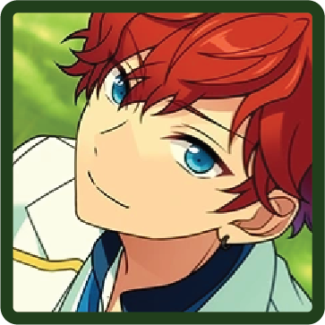

♪ the lotus who decorates the mundane world with melody
Keito Hasumi

As the son of a Buddhist priest, he tends to drone on when giving lectures. While he may seem overly serious, and perhaps a bit moody, he becomes slightly vulnerable when unexpected incidents occur. He carries out captivating performances with the flow of his mellow singing voice.
He serves as the leader of AKATSUKI from Rhythm Link.
MORE INFORMATION
BIO
Birthday

Sep. 6th
Hobby
Reading
Specialty
Shamisen
Idol Color
#316745
Likes
Glasses
Dislikes
Soybeans
UNITS
AKATSUKI
Keito Hasumi
Kuro Kiryu

Souma Kanzaki

DEADMANZ (Temporary)
A temporary unit that Rei Sakuma, Koga Oogami, Keito Hasumi and Kuro Kiryu were part of before the creation of AKATSUKI and UNDEAD.
Rei Sakuma
Keito Hasumi
Koga Oogami
Kuro Kiryu
Traumerei (Temporary)
A temporary unit created to oppose Knights Killers in the event Diner Live, formed by Wataru.
Wataru Hibiki

Keito Hasumi
Izumi Sena

Madara Mikejima

Ring.A.Bell (Shuffle Unit)
This shuffle unit was formed to promote a wedding venue by filming a promotional video with personalized proposals from each of the members. The group center is Midori Takamine.
Midori Takamine

Mao Isara

Eichi Tenshouin

Keito Hasumi
Leo Tsukinaga

CLUBS (!-Era)
The Student Council
Eichi Tenshouin
Keito Hasumi
Mao Isara
Tori Himemiya

Archery Club
Keito Hasumi
Tsukasa Suou

Yuzuru Fushimi

Leo Tsukinaga
CIRCLES (!!-Era)
Dramatica Theatre Troupe
A theatre circle organized by Wataru. The members aim to discover a new side of themselves. They also make their own costumes and props, and perform a wide range of works, from masterpieces to originals.
Wataru Hibiki
Hokuto Hidaka

Shu Itsuki

Nagisa Ran

Tomoya Mashiro
Keito Hasumi
Leo Tsukinaga
Arashi Narukami

Natsume Sakasaki

Keito Lecture ES Lessons
A study circle organized by Keito. It's a supplementary study session with miscellaneous information from various fields. Although the talk is long, the lecture provides tea and snacks.
Keito Hasumi
Yuzuru Fushimi
Hiiro Amagi
Aira Shiratori

Mika Kagehira

Archives Manga Club
A circle of manga lovers. The members gather together to read manga in the library or any random place during their free time, which they regard as the activity of the circle.
Tori Himemiya
Mao Isara
Midori Takamine
Jun Sazanami

Keito Hasumi
RELEVANT STORIES
Flower Festival

Spectacular Cinderella Show

Shinsengumi

Kabukimono

Tanabata Festival Wishes
Summer Night Festival
Quarrel Festival

Scroll of the Elements

Tsukimi Live
Cats and Camellia Train

Daikagura

Opera

Diner Live

Decorate

Summer Bird

Succession Match

Unification by Force

Ring

Scarlet Halloween
Submarine

SCOUT STORIES
Fresh Green Martial Artist

Chinatown

Comic World

Philosopher's Guidance
Ushimairi

Vagabond

Keito Lecture

Spy THE Mission

Chill Yellow

Manga Club